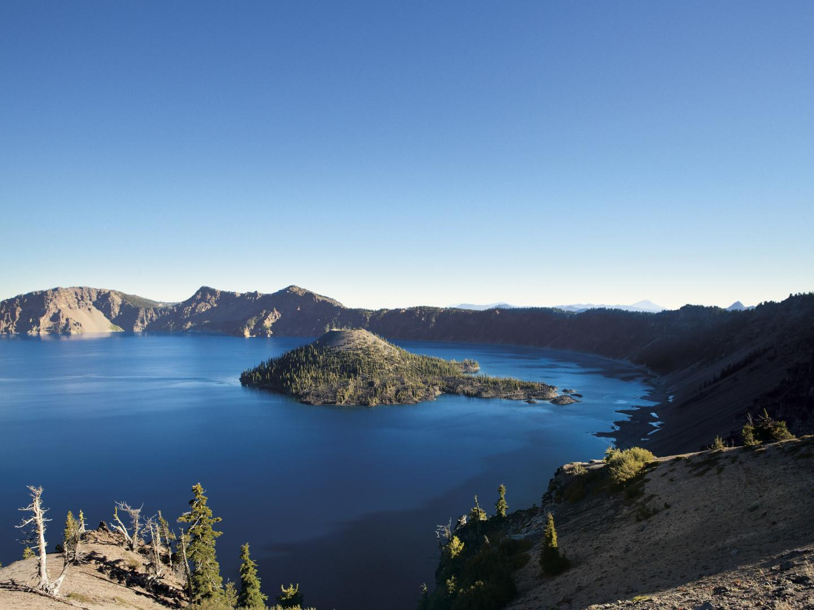
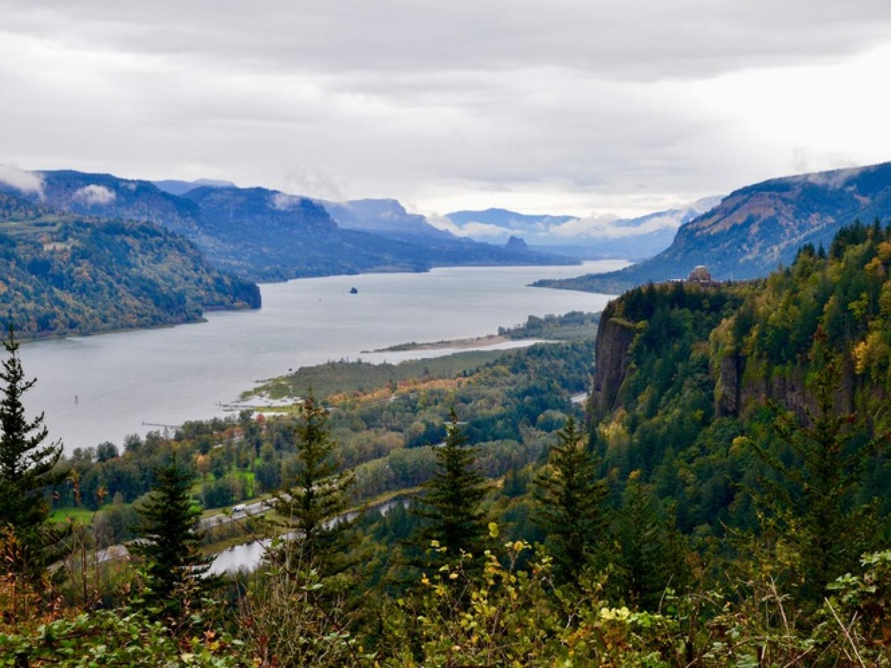
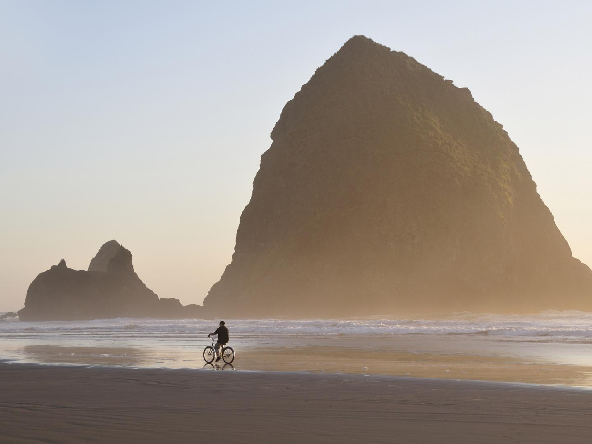
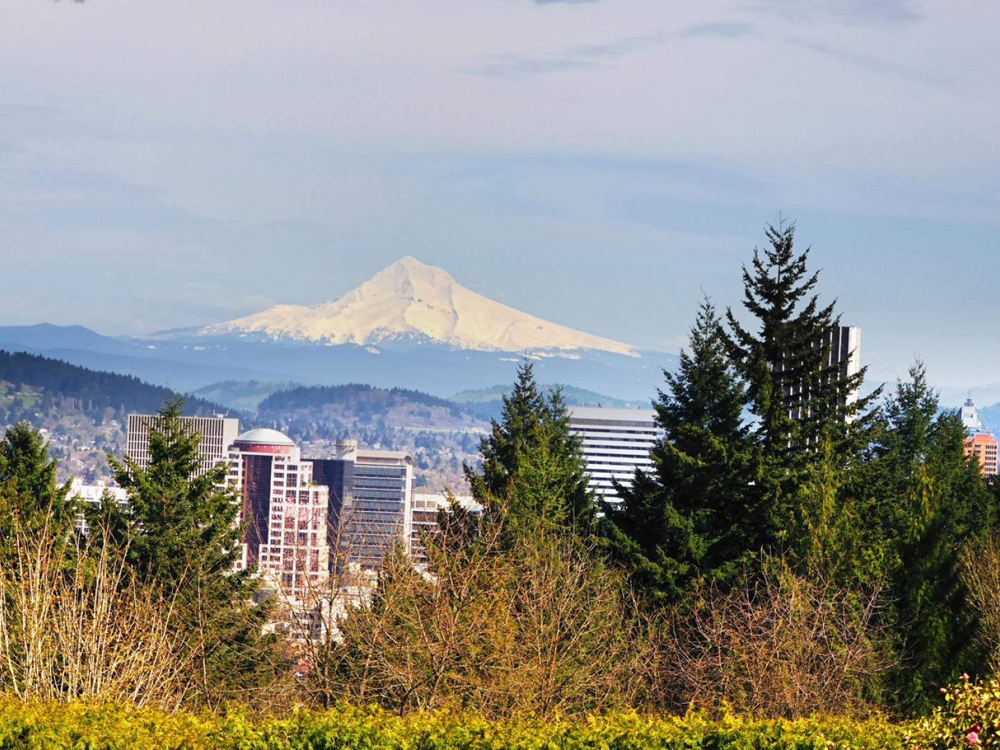
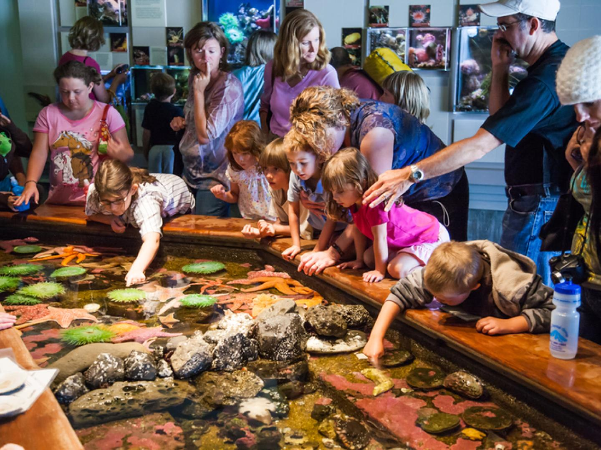
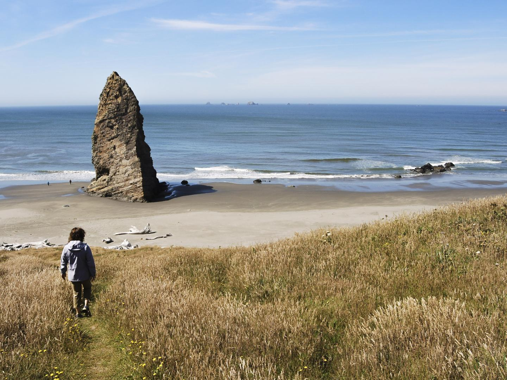
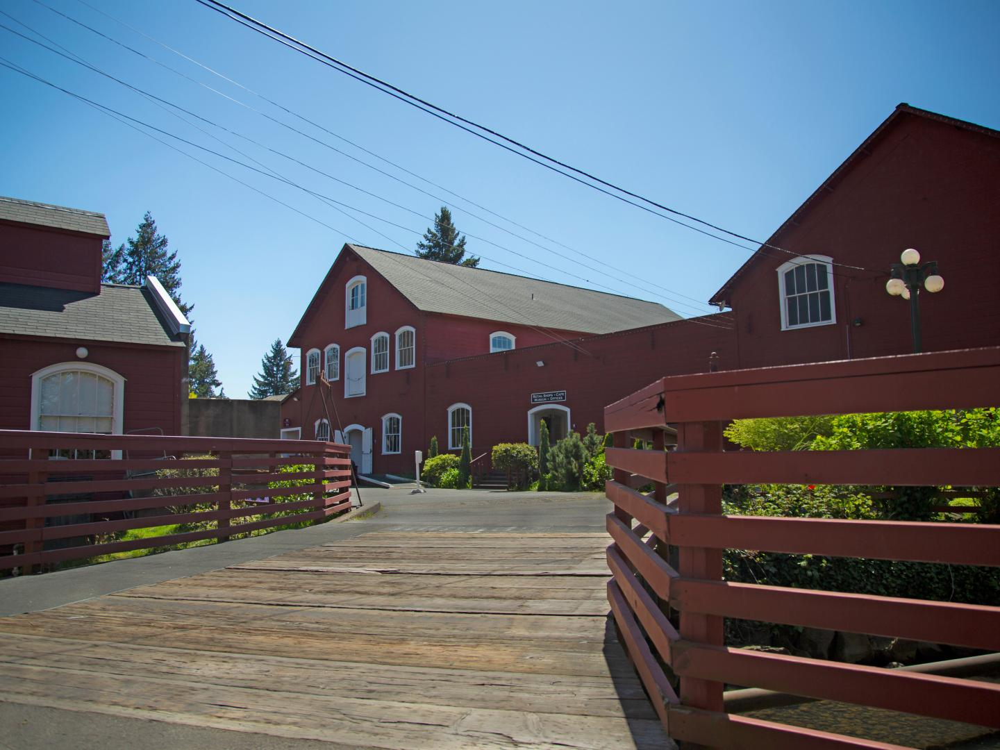
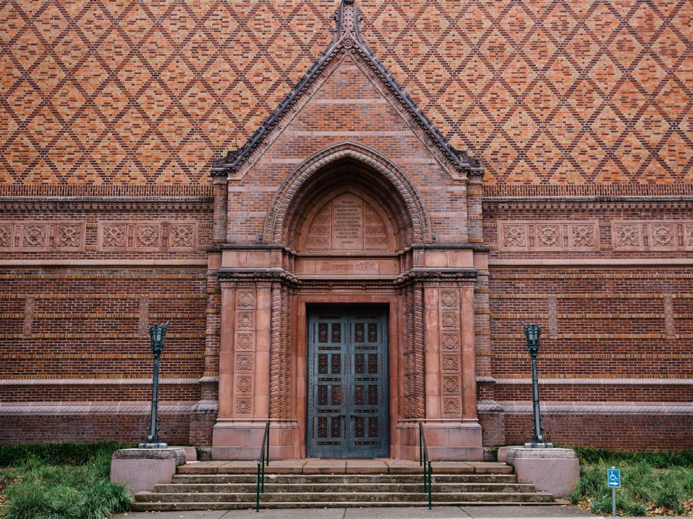
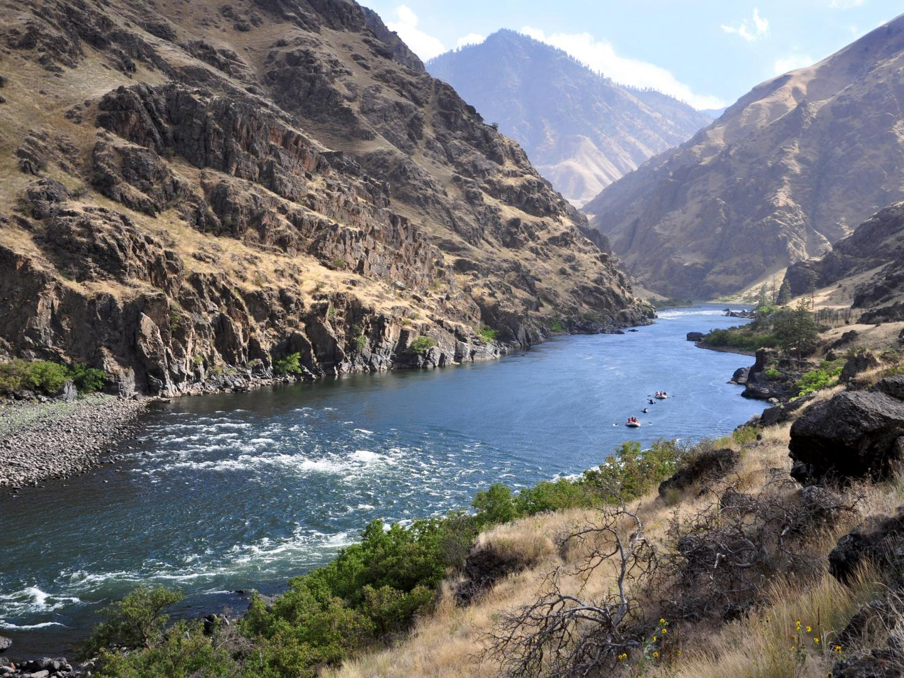
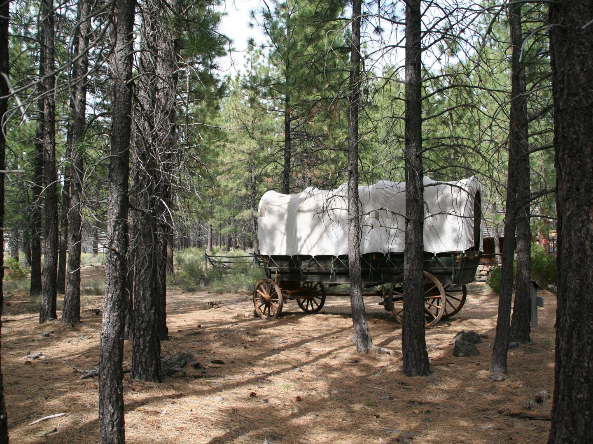

-
꼭 가봐야 할 곳

크레이터호 국립공원
울창한 고목과 산봉우리가 가득한 캐스케이드산맥(Cascade Mountains)에
둘러싸인 미국에서 가장 깊은 호수 안에 위자드(Wizard)섬(화산 봉우리)이 자리하고
있습니다. 매혹적인 이 풍경은 오리건주 7대 불가사의 중 하나로 배낭여행, 하이킹,
크로스컨트리 스키 및 보트로 즐길 수 있습니다.
더 보기
오리건주 7대 불가사의
-
꼭 가봐야 할 곳

컬럼비아강 협곡
북아메리카에서 두 번째로 큰 강인 컬럼비아강(Columbia River)은 폭포, 야생화가
가득한 들판은 물론 와인 생산에 이상적인 기후 등 지리적인 이점을 선사하는
캐스케이드산맥을 깊게 가로지르며 흘러갑니다. 이곳은 또한 카약, 윈드서핑,
스노보드 등 다양한 액티비티를 즐길 수 있는 아웃도어 활동의 천국이기도 합니다.
더 보기
-
꼭 가봐야 할 곳

캐넌 비치
태평양 연안에 놓인 그림 같은 캐넌 비치(Cannon Beach)에서는 어두운 바위와
코발트블루빛 바다를 뒤로하고 짙푸른 숲속에 수많은 엘크가 뛰어놉니다. 자연
명소인 헤이스택 록(Haystack Rock)을 돌아보고 에콜라 주립공원(Ecola State
Park)을 방문하거나 예술 마을 공동체에서 즐거운 시간을 보내며 직접 양조한
맥주를 선보이는 여러 펍 중 한 곳에 들러보세요.
더 보기
-
꼭 가봐야 할 곳

워싱턴 공원
포틀랜드에서 역사를 간직한 공원에 들러 이곳 대자연이 자아내는 환상적인
아름다움이 도시와 어우러진 모습을 보며 운동장, 양궁장, 수목원 및 놓쳐선 안 될
국제 장미 시험 정원(International Rose Test Garden)을 즐겨보세요.
더 보기
-
꼭 가봐야 할 곳

오리건 코스트 수족관
태평양 북서부에 자리한 호수와 강, 바다 안에는 어떤 생명체가 헤엄치고 있는지,
또 그 위로는 어떤 생명체가 날고 있는지 알아보세요. 이곳에서 열리는 전시회는
주로 해달, 물개, 바다사자 등을 다루지만, 북아메리카에서 가장 큰 규모를 자랑하는
바닷새 새장(Seabird Aviary)에서 7가지 종류의 새를 만나볼 수 있습니다.
더 보기
-
꼭 가봐야 할 곳

오리건 코스트 트레일
585km를 아우르는 태평양 연안을 하이킹, 자전거 타기 또는 드라이브하며
파노라마처럼 펼쳐지는 깎아지른 절벽과 상록수가 울창한 숲, 사하라를 방불케 하는
모래 사구와 모래사장이 끝도 없이 펼쳐지는 해변을 즐겨보세요. 길을 따라가며
매력을 뽐내는 여러 마을에 들러 다양한 명소를 방문해보세요.
더 보기
-
꼭 가봐야 할 곳

윌라멧 헤리티지 센터
1880년대에 설립된 헤리티지 센터 내 토마스 케이 모직 공장(Thomas Kay
Woolen Mill)을 둘러보세요. 14개의 역사적인 건물과 직물 학습 센터, 아티스트
스튜디오 및 연구 도서관 또한 자리해 있습니다. 영구 및 단기 전시회를 통해 이곳의
역사에 대해 배워볼 수 있습니다.
더 보기
-
꼭 가봐야 할 곳

조던 슈니처 미술관
유진의 오리건 대학교(University of Oregon)에 위치한 유명한 박물관으로 다양한
아시아 및 아메리카 예술 컬렉션을 소장하고 있으며, 미국박물관연합회(American
Alliance of Museums)에서 공인한 단 하나뿐인 아카데미 미술관입니다.
더 보기
-
꼭 가봐야 할 곳

헬스 캐니언 국립휴양지
북아메리카에서 가장 깊은 강 협곡인 이 협곡의 가장 멋진 모습을 보려면 상공에서
감상해보세요. 그러면 비로소 스네이크강(Snake River)의 흙빛 장관이 선사하는
놀라움에 입이 다물어지지 않는 경험을 할 수 있습니다. 이곳에서 일 년 내내 급류
래프팅, 캠핑, 승마는 물론 아름다운 경관도로 드라이브 등 다양한 액티비티를
즐겨보세요.
더 보기
-
꼭 가봐야 할 곳

고지대 사막 박물관
고지대 사막의 역사와 문화, 야생을 담아낸 이 박물관에서 사막의 동물을 모두 만나
볼 수 있습니다. 보브캣과 호저에 대해 알아보고 데저타리움에 방문하거나, 역사를
간직한 유서 깊은 목장에서 산책을 즐겨보세요. 마차를 타고 개척자의 삶을 경험해보
거나, 바이 핸드 스루 메모리 전시를 통해 이 지역 아메리칸 원주민이 살아온 역사의
발자취를 따라가볼 수있습니다.
더 보기
 현지인이 사랑하는 한여름 도심 축제 4선
현지인이 사랑하는 한여름 도심 축제 4선
 미국의 위대한 대자연을 품은 합리적인 가격의 숙소 6선
미국의 위대한 대자연을 품은 합리적인 가격의 숙소 6선
 오리건 주 윌라멧 밸리 시닉 바이크웨이를 따라즐기는 미식투어
오리건 주 윌라멧 밸리 시닉 바이크웨이를 따라즐기는 미식투어
 오리건주 포틀랜드 지역: 현지인이 소개하는 와인 컨트리 및 장인의 문화
오리건주 포틀랜드 지역: 현지인이 소개하는 와인 컨트리 및 장인의 문화
 서부 해안에서 꼭 가봐 야 할 LGBT 지역 3선
서부 해안에서 꼭 가봐 야 할 LGBT 지역 3선